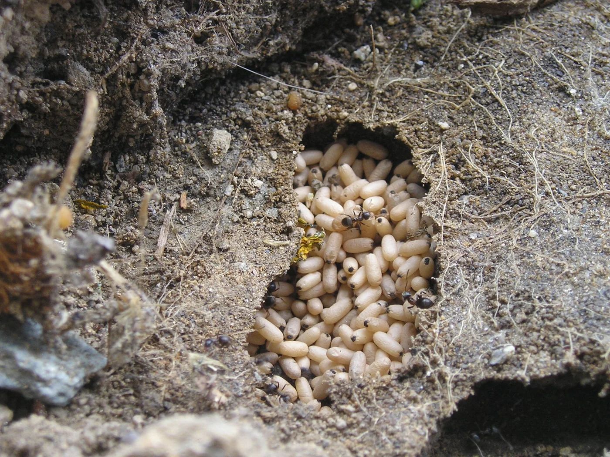

Kjenn igjen · leksikon


Kjenn igjen dyret
Kjennetegn og forvekslingsarter for 15 dyr du kan møte i og rundt huset. Basert på Folkehelseinstituttets skadedyrhåndbok. Vet du hva det er og lurer på hva du skal gjøre? Se Råd og løsninger.
Mus og rotter

HusmusMus musculusKropp 6–10 cm og hale 7–10 cm · spiss snuteSkadedyr

SkogmusApodemus spp.Store ører · store, utstående øyneSkadedyr

BrunrotteRattus norvegicusKropp rundt 20–27 cm uten hale · butt snuteSkadedyr
Veggedyr og svaletege


Skjeggkre og sølvkre


Veps


Maur

StokkmaurCamponotus spp.Helt svart hode · jevnt krummet ryggSkadedyr

Rød skogsmaurFormica rufa-gruppenTofarget hode, rødt og svart · humpete ryggUfarlig

Svart jordmaurLasius nigerHelsvart · små, 3–5 mmSkadedyr